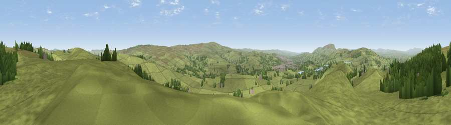

Viewpoint near Laneshaw Bridge
#12027 in England · top 17% of its area beats it · near Laneshaw BridgeWhere it is
The exact computed spot (SD 91675 42675). Click the marker for map links.
The view, rendered

A 360° render of this exact spot computed from the terrain model, tree cover and land cover — summer colours, afternoon light, calibrated against photographs of famous viewpoints. Real trees, hedges and buildings will differ in detail.
The panorama
Grey silhouette: terrain skyline in each direction (720 bearings, Earth curvature and refraction included). Dashed green: skyline with trees (+15 m) and buildings (+8 m) as obstacles. Blue strip: how far the ground is visible on each bearing.
Where the view opens
Wedge length = distance to the farthest visible ground on that bearing (vegetation-aware). Rings at 10, 25 and 50 km.
What fills the view
87% grassland · 10% woodland · 2% built-up
Angular shares of the visible panorama (visual magnitude), not map area. Landscape diversity 0.20 (0–1 Shannon).
Key numbers
More beautiful places nearby
The staircase of upgrades: each row has a higher view potential than everything closer. Driving times are estimates from straight-line distance, calibrated against real road routing — check an actual route before setting out.
| Place | Direction | Drive | Score |
|---|---|---|---|
| Viewpoint near Laneshaw Bridge | ENE · 1 km | ~3 min | 63.5 |
| Viewpoint near Earby | NNE · 3 km | ~7 min | 64.9 |
| Viewpoint near Lothersdale | NNE · 4 km | ~9 min | 65.5 |
| Viewpoint near Lothersdale | NNE · 5 km | ~12 min | 70.5 |
| Lad Law (Boulsworth Hill) | S · 7 km | ~15 min | 71.5 |
| Viewpoint near Barley | W · 11 km | ~21 min | 76.3 |
| Pendle Hill | W · 11 km | ~21 min | 76.5 |
| Viewpoint near Edenfield | SSW · 26 km | ~41 min | 77.5 |
53.88020, -2.12812 · source: screening · position refined by local search. Computed location — check access rights before visiting.